HaloDesigned and built · 13 min read
Your most used actions in a ring around the pointer, one shortcut away.
Halo is a desktop app I designed and built on my own, for macOS and Windows. Press one shortcut, or a mouse button, and a ring of your actions opens wherever the pointer is.
- Role
- Design and build, solo
- Why
- My take on Logitech's Actions Ring, for any mouse or keyboard, with no account
- Platform
- macOS 26 or later, and Windows 10 and 11
- Stack
- Swift, SwiftUI and AppKit on the Mac. C#, .NET 10 and WPF on Windows
- Status
- Version 1.0.0, free and open source. No usage numbers

In short
- The problem: the controls you use most are spread across menu bars and key combinations, and most only work while their app is in front.
- What I built: two native apps, one for the Mac and one for Windows, that open a ring of up to 12 actions around the pointer, with its own ring for each app and folders for the rest.
- The key idea: one shortcut does two jobs. Tap it and click, or hold it, flick toward an action and let go. Time and angle tell the two apart.
- Where it stands: version 1.0.0 on both systems, free under the GPL. It collects no data, so I have no usage numbers.
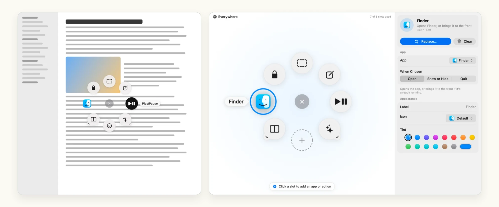
01 Why I built it
A shortcut is only quick if you can reach it from where you are
Say you are writing in one app and need to mute a call in another. You switch to the meeting, press its shortcut and switch back. The shortcut itself only works while that app is in front.
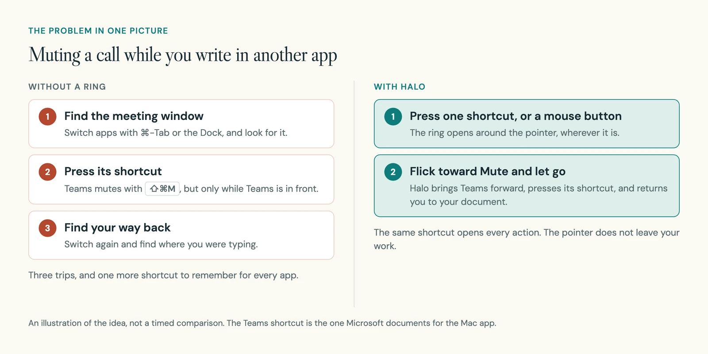
Logitech's Actions Ring answers this with a ring of actions around the pointer. Halo is my own take on that idea, and it is not connected to Logitech. I set three rules for it: it works with any mouse or keyboard, it needs no account, and it sends nothing anywhere.
02 How it works
Press, point, let go, and you are back in your work
Halo sits in the menu bar on a Mac and next to the clock on Windows. Press its shortcut and a ring of slots opens around the pointer. Each slot holds one action. A new ring has eight, and a ring can have from 4 to 12.
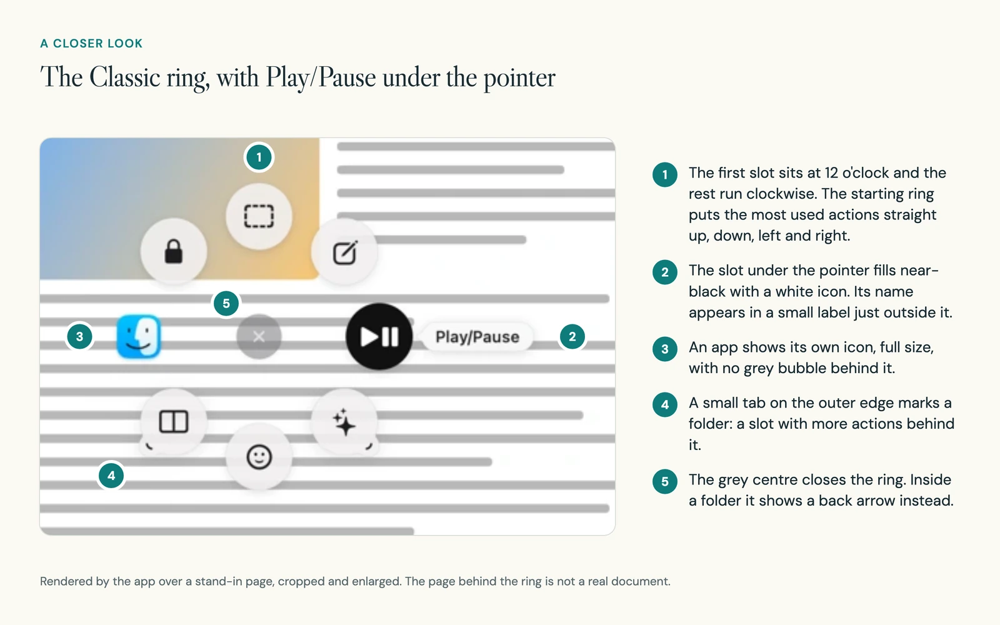
A slot can do far more than open an app. These are the kinds of action it can hold:
| Kind | Examples |
|---|---|
| Apps | Open, switch to, show or hide, or quit an app |
| Inside an app | An app's own shortcut, such as Teams: Mute, sent even from another app |
| Websites and files | Open a page, a document or a folder |
| Media | Play or pause, next track, volume, mute, brightness |
| Screenshots | An area, a window or the whole screen, to a file or the clipboard |
| Windows | Snap left or right, fill, centre, move to the next display |
| Text | Snippets with the date, the time or the selected text filled in |
| AI prompts | Send the selected text with a prompt to Claude, ChatGPT, Perplexity or Gemini |
| Smart Actions | Several actions in a row, with pauses between them |
I chose the eight starting slots to match Logitech's default Mac ring, with a folder of window layouts where Logitech has a settings shortcut. The most used ones sit straight up, down, left and right.
03 Decision 1
One shortcut gives two ways to choose, and time tells them apart
What you see: tap the shortcut and the ring stays open for you to click. Or hold it, flick toward a slot and let go. Once a layout is familiar, the flick becomes one quick stroke.
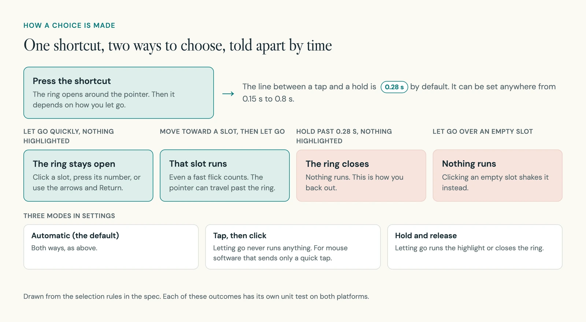
In the build: the line between a tap and a hold is 0.28 seconds. Let go sooner with nothing highlighted, and Halo reads it as a tap. These rules live in a small piece of logic with no interface, so I could test every outcome on its own.
Picking the slot is pure geometry. Halo measures the angle from the centre to the pointer. While you hold, that is measured from where you pressed, and a flick far past the ring still counts.
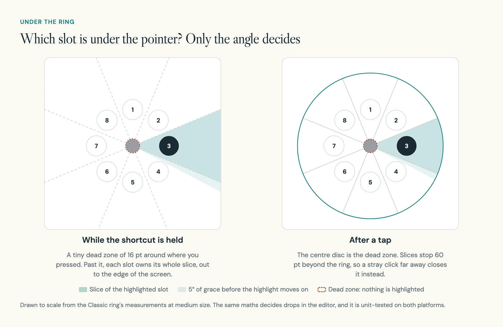
Mouse buttons made this harder. Many people will open Halo from a spare mouse button, mapped to the shortcut in their mouse's own software. Some of those programs hold the key down while the button is down. Others send a quick tap, and a hold never happens.
So the welcome guide has a Test Your Trigger step. You hold your mouse button for about a second, and Halo tells you which kind of software you have. If it only taps, you can switch to Tap, Then Click.
04 Decision 2
You set up the ring on the ring itself, not in a list
What you see: the settings window shows the same ring you use, large, in your chosen look. Click a slot to select it and its settings open beside it. Drag one slot onto another to swap them.
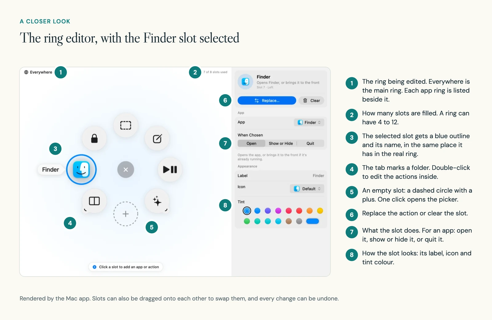
In the build: the editor's ring and the floating ring share one model, one set of measurements and the same two looks. A drop onto the editor is placed by the same angle maths that picks a slot in the live ring. Every change goes through one place that records it for undo and saves it to a readable settings file.
The two views do differ in one way, on purpose. The editor keeps every position, so you can see where an empty slot is. The live ring hides empty slots and spreads your actions evenly.
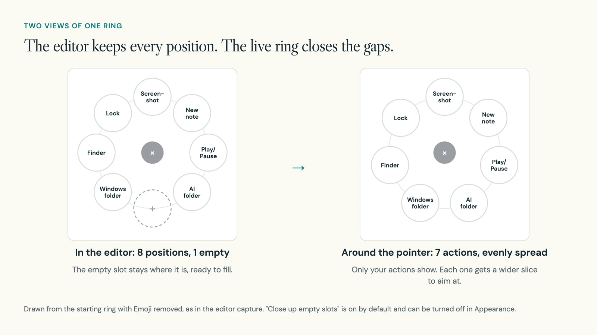
05 Decision 3
Each app can have its own ring, and folders hold the rest
What you see: a meeting app and a photo editor need different controls. So any app can have its own ring. It opens instead of the main ring, called Everywhere, whenever that app is in front.
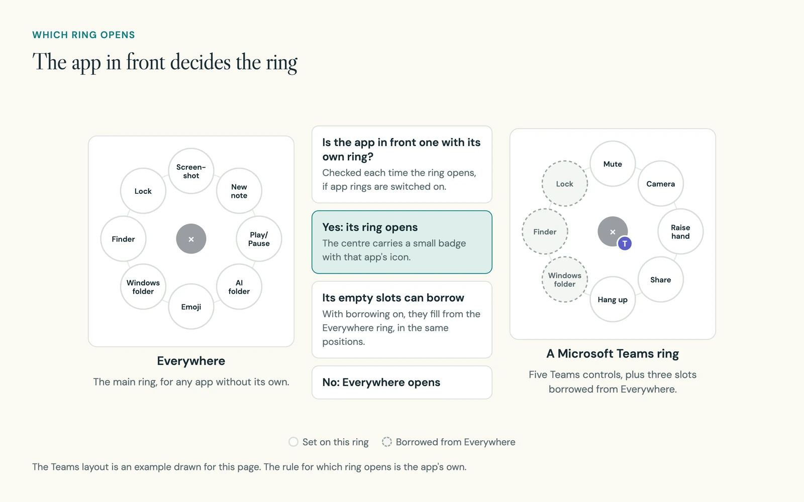
Folders keep the first ring small. Rest the pointer on a folder and its actions fan out on an outer arc. The main ring dims but stays where it was.
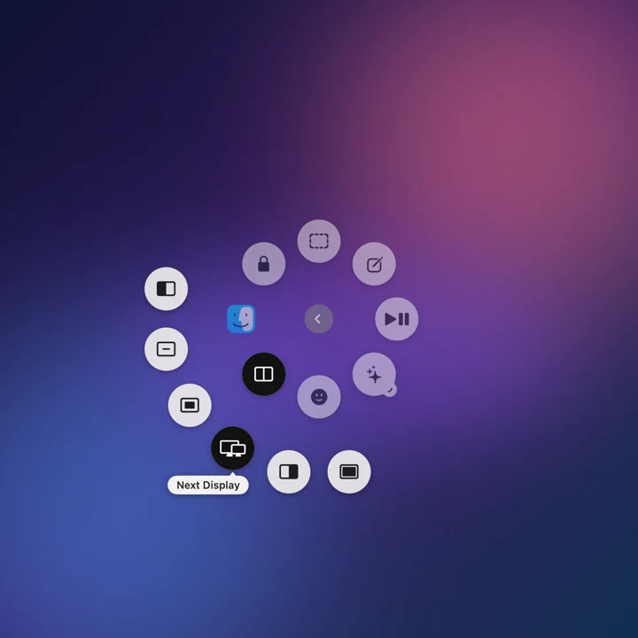
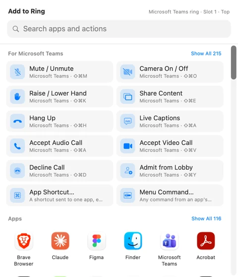
In the build: an action inside another app can reach it in three ways. I used the simplest one that works for each action.
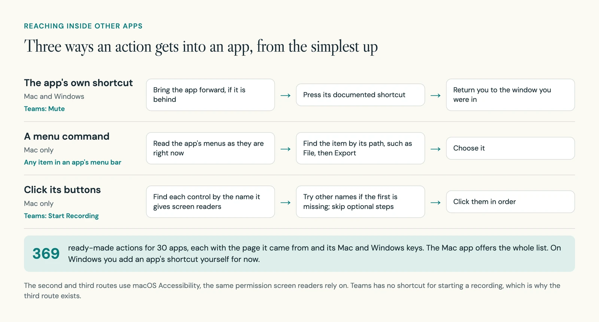
The 369 ready-made actions for 30 apps are kept as one list. Each entry records where its shortcut is documented. Some come with notes, because an app's settings can change them. Zoom's shortcuts, for example, only work from other apps when they are marked as global in Zoom.
06 Decision 4
A look you can read over any page, and motion that never makes you wait
What you see: two looks. Classic uses light round bubbles. Glass uses the Liquid Glass material from macOS 26, as one ring of curved segments with the name of the action in the centre.

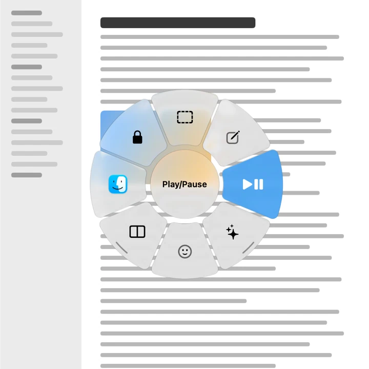
In the build: Logitech's Mac bubbles are only about 38% solid, and reviewers have found them hard to read. I made Classic's bubbles about 90% solid, with a hairline edge and a very soft shadow, so they show up on a white page too.
Windows cannot blur the windows behind another window. So for Glass on Windows, Halo takes a small blurred snapshot of the screen just before the ring appears and draws on top of it. With transparency turned off, both systems use solid fills.
Every movement has a number in the spec, so the two apps could match.
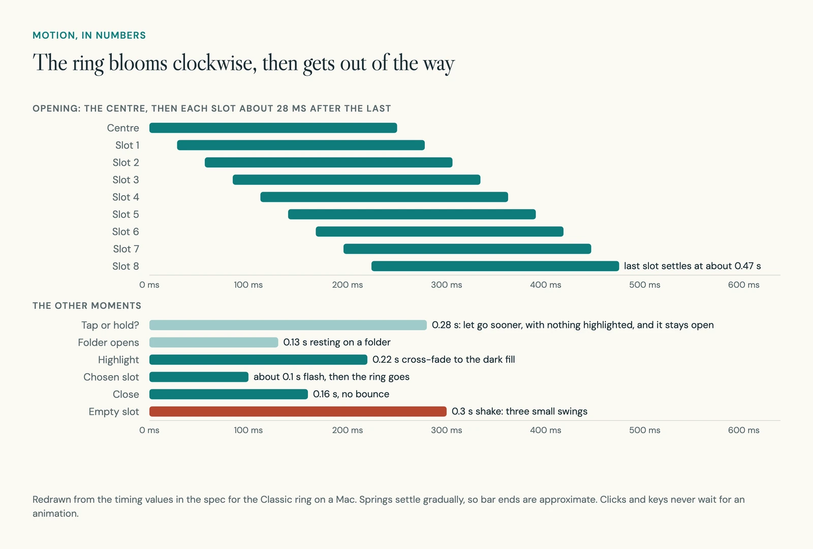
07 The build
Two native apps that share one description of a ring
Halo is two native apps, one for each system. A ring that floats over every app and never takes focus depends on each system's own window rules, so each app handles those its own way. Both apps read and write the same settings file, so a ring exported on a Mac opens on Windows.
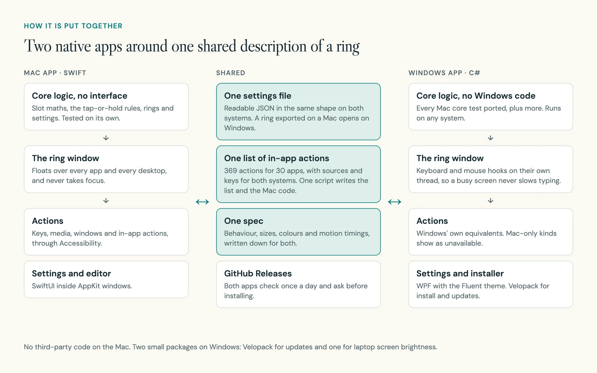
| Part | What I used |
|---|---|
| Mac app | Swift, SwiftUI and AppKit, built with Swift Package Manager. No third-party code |
| Windows app | C#, .NET 10 and WPF with the Fluent theme |
| Shared | One settings file in readable JSON, one list of in-app actions, one spec |
| Install and updates | A disk image on the Mac. Velopack on Windows. Both update from GitHub Releases |
| Checks | Swift tests and xUnit, run by GitHub Actions on every change to the main branch |
- 26,300
- lines of Swift in the Mac app, tests included, rounded
- 12,900
- lines of C# and XAML in the Windows app, tests included, rounded
- 144
- unit tests: 56 on the Mac side, 88 on Windows
- 369
- ready-made in-app actions for 30 apps
The tests cover the parts with no interface: the slot maths, the tap-or-hold rules, settings files and the action list. On Windows, a separate check builds the installer, installs it on a clean machine, runs a first-start self-test with screenshots, and uninstalls it.
The hardest problems were where Halo meets the system, not in the ring.
| Area | What went wrong, and what I changed |
|---|---|
| Focus | If the ring took focus, a shortcut it sends would land in Halo instead of your app. The ring window never becomes active, and clicks outside it pass through to the app below. |
| Lost key releases | Mouse software, or a Windows security screen, can swallow the release of the shortcut, which would leave the ring stuck. Halo checks the keys itself and treats 0.15 seconds of released keys as a release. A watchdog frees every key it borrowed whenever the ring is hidden. |
| Permissions | macOS ties the Accessibility permission to the app's signature, and each new build lost it. I gave the app a fixed identity so permission survives updates, and added a Fix Access button for a stale grant. |
| Safe updates | An update replaces the app itself. The Mac updater installs a download only if its checksum, app identity, version and signature all match. |
| Windows editor | The ring preview in the editor came up blank, because its width started unset. I fixed it, and the self-test now checks that every preview has a size. |
08 Accessibility
The ring works from the keyboard and speaks to screen readers
A ring is a pointer idea, but it should not need a pointer. While it is open, Halo borrows a few keys and hands them back when it closes, so the app you were in keeps its focus.
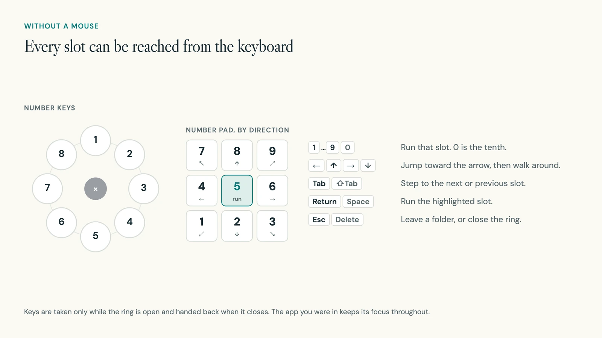
- Each change of highlight is announced by VoiceOver on the Mac and Narrator on Windows.
- With Reduce Motion on, the ring only fades. Nothing scales or bounces.
- With Reduce Transparency on, Glass becomes solid with hairline borders. With Increase Contrast on, the highlight gets an outline as well as a colour.
- The ring never closes by itself after a delay, so nobody is rushed.
09 Where it stands
Version 1.0.0 on both systems, with clear gaps on Windows
Halo 1.0.0 is free and open source under the GNU GPL. It has no account, no analytics and no tracking. The only request it makes on its own is the daily check for updates. That also means I have no usage numbers to share.
I use Halo every day on my own Mac.
These are not done yet:
- The Mac app is not notarised by Apple, which needs a paid developer account. The first time you open it, macOS asks you to allow it in Privacy and Security.
- The Windows installer is not code-signed yet, so Windows may warn before it runs.
- The Windows editor is simpler than the Mac one. It has no drag and drop, no icon or tint picker and no editor for Smart Action steps.
- Apple Shortcuts, AppleScript and menu commands are Mac only, and the list of ready-made in-app actions is not in the Windows app yet.
- This page shows only the Mac app. I have no Windows screens or recordings of the ring in motion to show yet.
10 What is next
Test it with people, then bring Windows level
- A first study: set up three actions people use often, repeat a task after a break, and compare their hesitation with the shortcuts they already use.
- Checks I want to run: setting up a ring with the keyboard only, switching rings between apps, backing out of folders, and actions that fail for lack of permission.
- Bring the Windows editor and the ready-made in-app actions level with the Mac.
- Sign the Windows installer and notarise the Mac app, so neither system warns on first open.
11 What I learned
Write the feel down as numbers, and test it like logic
How a ring feels comes down to a few numbers: 0.28 seconds, 16 points, 5 degrees, 28 milliseconds. Once they were written down and tested without any interface, a second app on another system could behave the same way.
The ring was the easy part. Most of my time went to the edges, where Halo depends on the system and on other apps: focus, lost key releases, permissions and other apps' shortcuts. That is where I would look first in my next tool of this kind.
Review the file. Keep a way back.